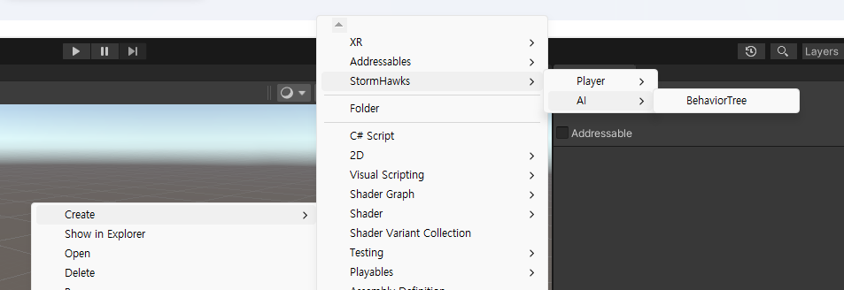
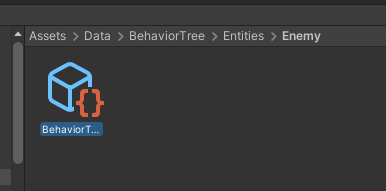
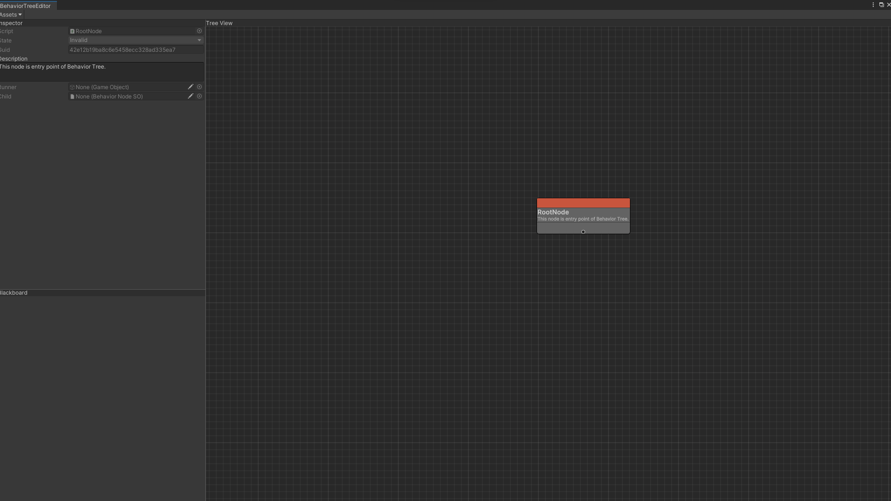

BehaviorTree Management
BehaviorTree(BT)를 관리(수정)하기 위한 문서입니다. BT는 무엇인지, 그리고 왜 사용하는지에 대한 정보 또한 얻을 수 있습니다.
BehaviorTree란?
BehaviorTree란 게임에서 Behavior(행동) 을 [Tree](https://ko.wikipedia.org/wiki/%ED%8A%B8%EB%A6%AC_%EA%B5%AC%EC%A1%B0#:~:text=%ED%8A%B8%EB%A6%AC%20%EA%B5%AC%EC%A1%B0(tree%20%E6%A7%8B%E9%80%A0%2C%20%EB%AC%B8%ED%99%94%EC%96%B4,%EC%9D%B4%20%EC%97%86%EB%8A%94%20%EC%97%B0%EA%B2%B0%20%EA%B7%B8%EB%9E%98%ED%94%84%EC%9D%B4%EB%8B%A4)구조로 만들어 AI의 행동을 관리(제어) 하는 것이다.
즉, BT는 Tree구조로 이루어져 있고, 그 Tree는 Node를 저장하는 컨테이너로 볼 수 있다.
Node란, 사용자가 정의할 수 있거나 이미 정의되어 있는 타입이 저장되어 있을 수 있다. BT에서는 행동이 Node로 저장되어 있다.
BT는 Node 탐색을 DFS순서에 따라 노드를 실행시킨다.

BT에서는 Node를 방문시 무조건 그 Node를 실행시킨다. 그리고 반환값이 존재하며 실행시킨 Node에게서 반환값을 받는다. 그 반환값에 따라 우선순위 혹은 건너뛰기 등을 알거나 할 수 있다.
우리가 사용할 BT에서는 여러가지 Category로 Node들이 나뉘어져 있는데, Action, Decorator, Composite, Conditonal가 대표적이다. Node상태는 Invalid, Running, Success, Failure로 이루어져있다. Node를 실행시키게 된다면 앞의 Node상태를 반환값으로 받는다.
Node 종류
- Composite
- Sequence : 자식노드를 왼쪽에서부터 오른쪽으로 실행시킨다. 만약 자식노드가 Failure를 반환한다면, Composite노드 또한 Failure상태를 부모노드에게 반환한다. 모든 자식노드가 Success를 반환한다면 Success상태를 반환한다. 만약 하나의 자식노드라도 Running상태라면 부모노드에게 Running상태를 반환한다.
- Selector : 자식노드들을 왼쪽에서부터 오른쪽으로 탐색하며 실행시킨다. 만약 하나의 노드라도 Success를 반환 받는다면, 탐색을 중지하고 부모노드에게 Success를 반환한다.
- RandomSelector : 자식노드들의 순서와 상관없이 Random으로 자식노드를 실행시킨다. 만약 실행시킨 자식노드가 Success를 반환한다면 부모노드에게 Success를 반환한다.
- ...
- Decorator
- Repeat : 자식노드의 반환값에 관계없이 계속해서 자식노드를 실행시킨다.
- ...
- Conditional
- 미리 정의된 조건에 부합한다면, Success를 반환한다. 아니라면 Failure.
- Action
- BT가 코드를 실행시킨 뒤, AI가 특정 행동을 하도록 시키는 노드.
Unity에서 BehaviorTree 활용하기
우리가 사용할 BT는 ScriptableObject(SO)로 제작되었으며, Node들 또한 SO 제작되었다.
BehaviorTree 만들기

BehaviorTree Editor 사용법
이제 우리는 생성한 BT를 수정(편집)해기 위해서는 BT Editor를 열어야한다. 생성된 BT를 더블 클릭하면 Editor를 열 수 있다. 
열린 BT Editor의 모습.

노드 관리
노드 생성
다른 노드를을 생성하기 위해서는 TreeView(Grid)쪽에서 오른쪽 마우스 클릭을 한 후, 생성하고 싶은 노드를 선택하면 생성할 수 있다.

노드 연결
예시로 만들어본 BT. Node들끼리 Edge를 통해서 연결 할 수 있다. (이때 부모 자식간의 관계가 설정된다.)

노드 정보
또한 Node를 선택하면 그 Node의 Inspector창이 열리는데, 그 때 그 노드에 관한 정보를 수정할 수 있다.

BT 실행
BT Runner component 추가
이렇게 생성된 BT는 BehaviorTreeRunner 가 실행시킬 수 있다.

실행시킨 결과